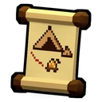

Blank Chart
Blank Chart is a common material. A blank sheet for the Cartographer's Table. Every chart is drawn on one.
Item sources
| Source | Quantity | Rarity | Notes |
|---|---|---|---|
| Bandit King | 1–3 | 1/1,600 | Rare Drop table |
| Bernie | 1–3 | 1/1,600 | Rare Drop table |
| Cult Leader | 1–3 | 1/1,600 | Rare Drop table |
| Cyclops | 1–3 | 1/1,600 | Rare Drop table |
| Punchy | 1–3 | 1/1,600 | Rare Drop table |
| Shooty | 1–3 | 1/1,600 | Rare Drop table |
| Garbage Man | 1–3 | 1/4,800 | Rare Drop table |
| Slime King | 1–3 | 1/4,800 | Rare Drop table |
| Bandit Elite | 1–3 | 1/6,400 | Rare Drop table |
| Super Zombie | 1–3 | 1/6,400 | Rare Drop table |
| Bandit | 1–3 | 1/12,800 | Rare Drop table |
| Cultist | 1–3 | 1/12,800 | Rare Drop table |
| Oak Entling | 1–3 | 1/12,800 | Rare Drop table |
| Slime | 1–3 | 1/12,800 | Rare Drop table |
| Squirrel | 1–3 | 1/12,800 | Rare Drop table |
| Zombie | 1–3 | 1/12,800 | Rare Drop table |
Made by
Level 25, at the Cartographer's Table; makes 3:
 Flax Fabric ×4
Flax Fabric ×4 Oak Plank ×2
Oak Plank ×2 Coal ×20
Coal ×20
Uses
| Makes | Takes | Level | Notes |
|---|---|---|---|
 Fields Chart ×2 Fields Chart ×2 | 1 | 25 | Cartographer's Table |
 Camp Chart ×2 | 1 | 25 | Cartographer's Table |
 Town Chart ×2 Town Chart ×2 | 1 | 25 | Cartographer's Table |
 Cyclops Chart ×2 Cyclops Chart ×2 | 1 | 25 | Cartographer's Table |
| Cyclops Chart ×2 | 1 | 25 | Cartographer's Table |
| Cyclops Chart ×2 | 1 | 25 | Cartographer's Table |
 Cultist Chart ×2 Cultist Chart ×2 | 1 | 25 | Cartographer's Table |
 Dump Chart ×2 Dump Chart ×2 | 1 | 25 | Cartographer's Table |
 Bowl Chart ×2 Bowl Chart ×2 | 1 | 25 | Cartographer's Table |
 Storm Chart ×2 Storm Chart ×2 | 1 | 25 | Cartographer's Table |
 Pyramid Chart ×2 Pyramid Chart ×2 | 1 | 25 | Cartographer's Table |
 Cave Chart ×2 Cave Chart ×2 | 1 | 25 | Cartographer's Table |
 Grotto Chart ×2 Grotto Chart ×2 | 1 | 25 | Cartographer's Table |
Notes
Not written yet
When Blank Chart is worth getting, and what to do with it.
Gallery
Not written yet
No pictures yet: renders, models and animations go here.
Trivia
Not written yet
Anything else worth knowing.
Changes
Not written yet
What changed for Blank Chart, update by update.